CaptainFredric · Swords & Sorcery
Crimson, brass and iron. Promotional artwork and actual gameplay are identified separately.
Real gameplay trailer
27 seconds. The live menu introduces Castleward, followed by melee, Fireball and Blazing Vortex in the Practice Yard. Original game audio. The canvas recording excludes the surrounding HUD.
Landscape screenshot candidates
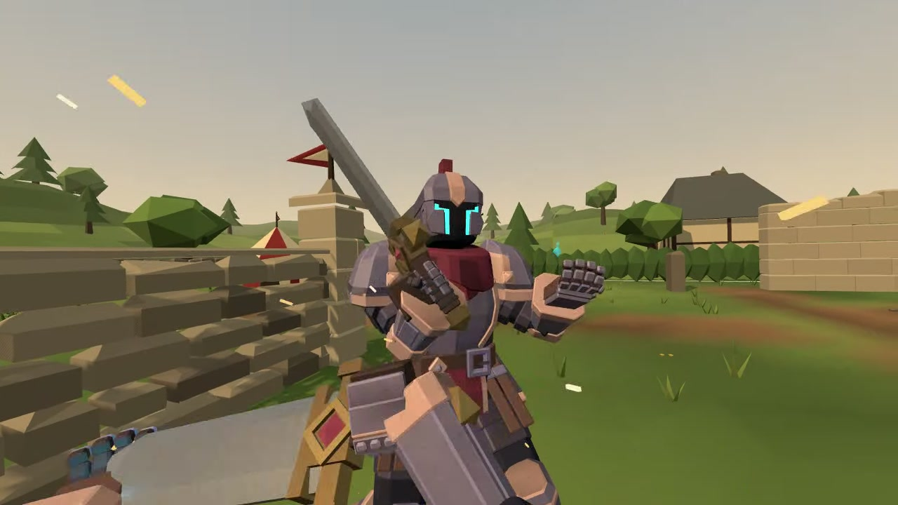
Melee and Guard
Actual gameplay frame.
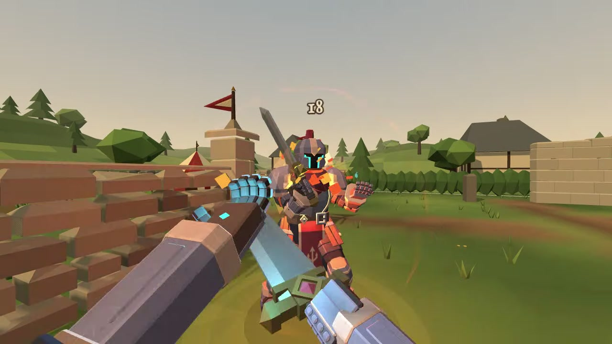
Answer with sorcery
Actual gameplay frame. Added to the private itch draft.
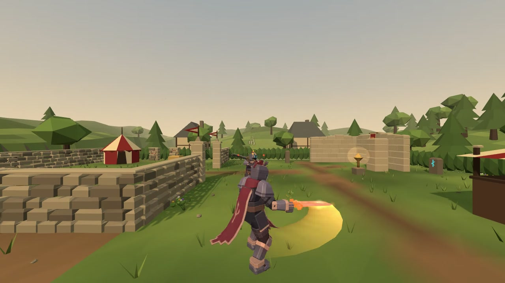
Blazing Vortex
Actual gameplay frame using the existing ultimate camera.
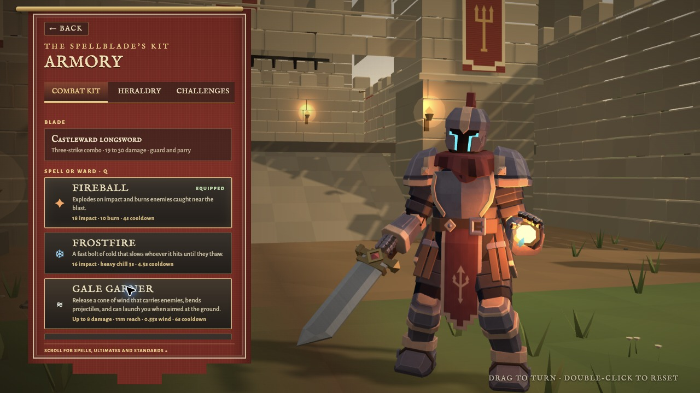
Choose your kit
Actual Armory UI.
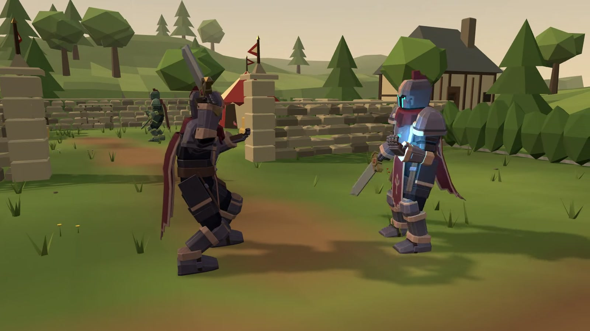
Castleward
Actual live menu scene, distinct from playable combat.
Creator identity and promotional covers
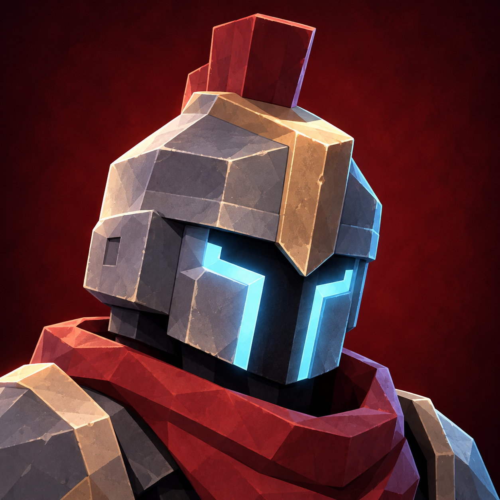
Preferred helmet portrait
AI assisted promotional refinement of CaptainFredric's original character design. Public profile upload remains pending.
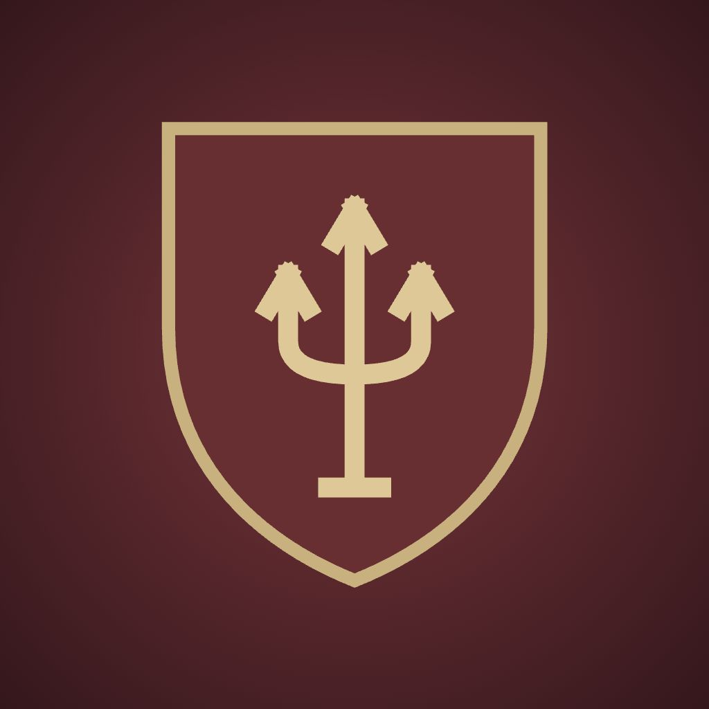
Castleward crest
Existing game crest composed as a square avatar.
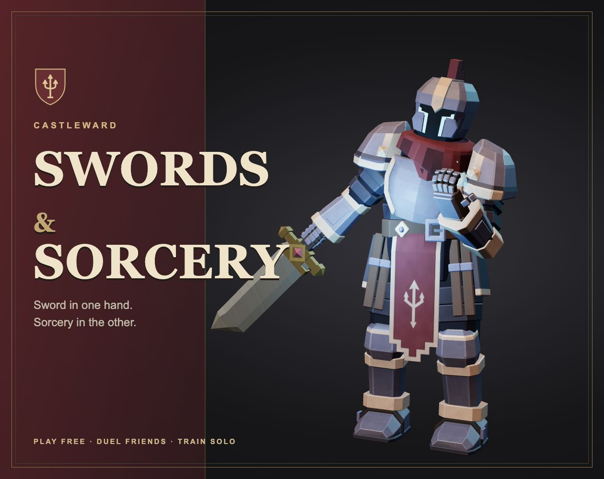
itch.io cover
Production GLB in its authored Cast pose, with staged lighting and typography. Promotional render.
Creator support cover
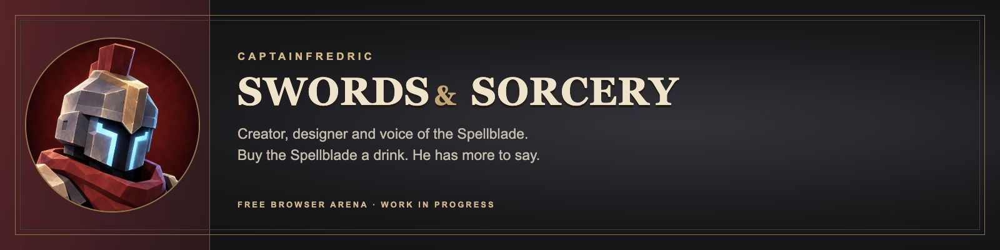
1600 × 400. A 1200 × 300 variation is ready for Ko fi.
itch.io page banner
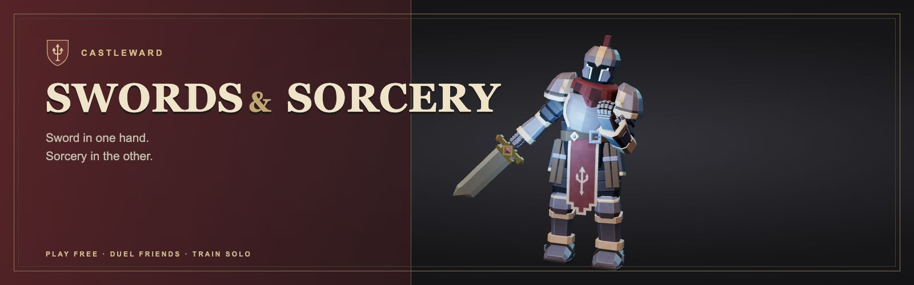
1600 × 500. Staged production model render.
Menu fit correction
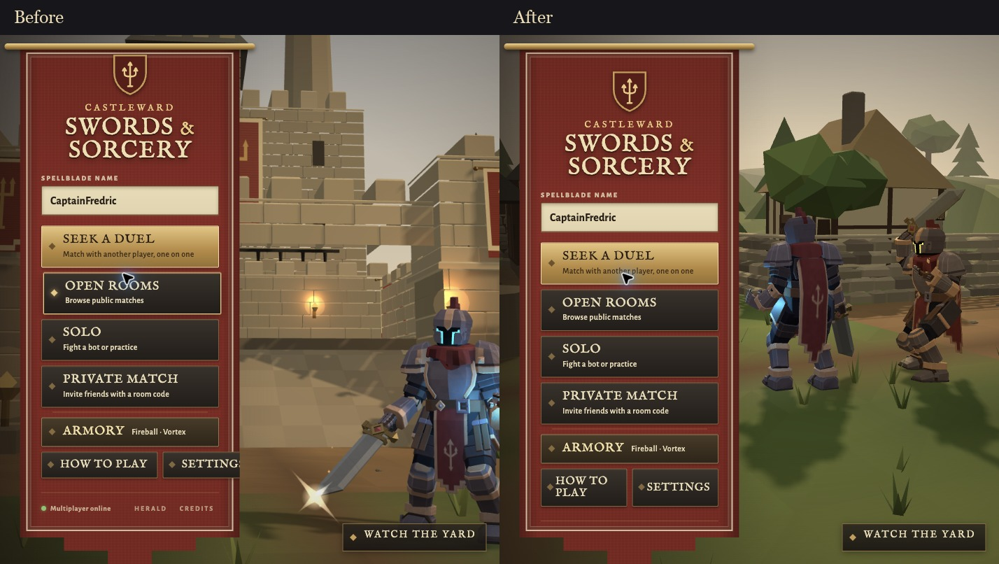
Read the audit and remaining release checks